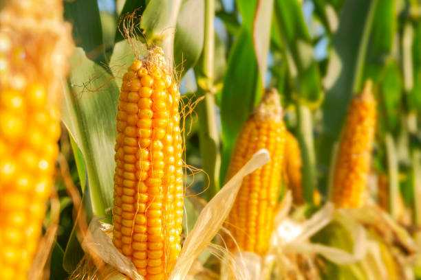
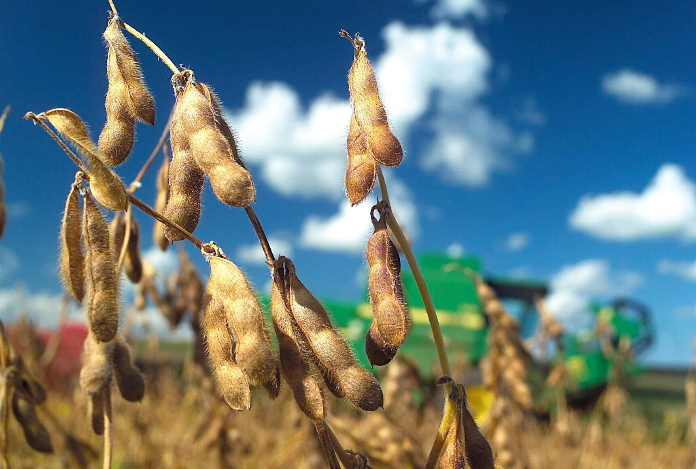

CULTIVOS
Conheça os cultivos que transformam resíduos em energia
Cada cultura gera diferentes tipos de resíduos agrícolas que podem ser aproveitados para biomassa.
Selecione um cultivo na calculadora para simular
o potencial energético da sua plantação.

Milho
O milho gera palha, sabugo e folhas.
- Resíduo médio: 1,5 t/ha
- Poder energético: Alto
- Uso: Palha e sabugo

Soja
Produz resíduos como palha e cascas.
- Resíduo médio: 1,2 t/ha
- Poder energético: Médio
- Uso: Palha e cascas
Cana-de-açúcar
Bagaço e vinhaça possuem excelente potencial.
- Resíduo médio: 1,8 t/ha
- Poder energético: Muito Alto
- Uso: Bagaço e palha
Trigo
A palha do trigo pode ser convertida em energia.
- Resíduo médio: 1,1 t/ha
- Poder energético: Médio
- Uso: Palha